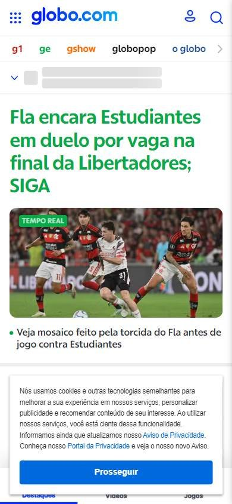
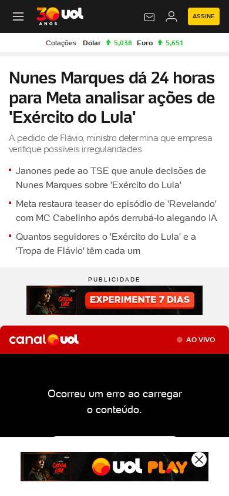
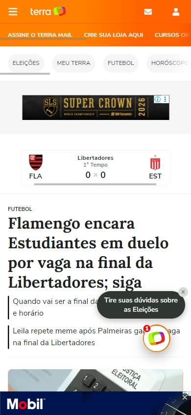

Sitio informativo o de noticias
Los seleccionados
Los tres sitios más visitados de Brasil, según estadísticas de tráfico.
En resumen: lo que hacen los líderes
La pantalla de inicio de cada uno



Estilo visual
Colores, imágenes, tipografía y cuánta información muestran.
Tu estilo visual debería…
- Usá tu color de marca en el header y fotos grandes para la noticia principal.
Lo que tienen en común: Alta densidad, fotos grandes para lo principal y el color de la marca presente en el header o en las secciones.
La paleta de cada uno
Medida sobre la primera pantalla. Los colores de marca salen del header; el resto muestra cuánto espacio ocupa cada color.
Así lo resuelve cada uno
Ficha comparativa
| Aspecto | Globo | UOL | Terra |
|---|---|---|---|
| Paleta | Acotada: blanco + colores por marca del grupo | Acotada: negro + amarillo + rojo | Acotada: naranja + blanco |
| Imágenes | Fotos periodísticas grandes | Fotos y video grandes | Fotos medianas |
| Tipografía | Sin serifa | Sin serifa, titular grande | Serifa en titulares |
| DensidadIgual en todos | Alta | Alta | Alta |
Header
La franja de arriba con el logo y los accesos.
Tu header debería…
- Logo grande y el color de tu marca en el header o en el logo.
- Botón de suscripción destacado en amarillo o color de acento.
Lo que tienen en común: Header con el color de la marca presente, logo grande y accesos a la cuenta y a los servicios del portal.
Así lo resuelve cada uno
Ficha comparativa
| Aspecto | Globo | UOL | Terra |
|---|---|---|---|
| Fondo | Blanco | Negro arriba + blanco | Naranja de marca |
| Logo | Centrado | A la izquierda | A la izquierda |
| A la derecha | Cuenta y «Busca» | Correo, «Entrar» y botón amarillo «Assine» | Íconos de correo y cuenta |
Menú y categorías
Cómo se organizan las secciones.
Tu menú y categorías debería…
- Fila de secciones en mayúsculas, letra chica, debajo del logo.
Lo que tienen en común: Una fila larga de secciones en mayúsculas o, en Globo, de las marcas del grupo cada una en su color.
Así lo resuelve cada uno


Ficha comparativa
| Aspecto | Globo | UOL | Terra |
|---|---|---|---|
| Formato | Fila de marcas del grupo con colores propios | Fila larga de secciones en mayúsculas | Fila de secciones en mayúsculas |
| Ubicación | Debajo del logo | Debajo del logo | Debajo del header |
Primera pantalla
Lo primero que se ve debajo del header.
Tu primera pantalla debería…
- Noticia principal con titular grande y foto o video.
- Columna de noticias secundarias con foto chica.
Lo que tienen en común: La noticia principal combina foto grande y titular fuerte, con una columna de noticias secundarias; siempre hay publicidad arriba.
Así lo resuelve cada uno
Ficha comparativa
| Aspecto | Globo | UOL | Terra |
|---|---|---|---|
| Formato | Noticia con foto grande y titular encima + columna de noticias | Titular grande + video en vivo | Titular grande con serifa + fotos al costado |
| Publicidad arribaIgual en todos | Sí | Sí | Sí |